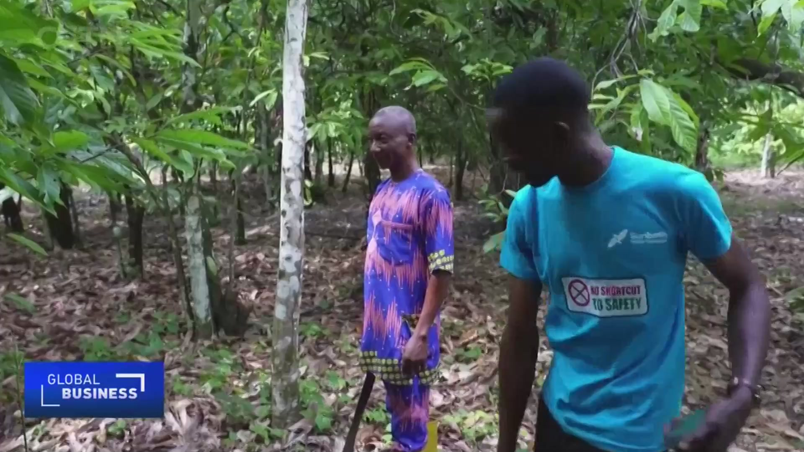
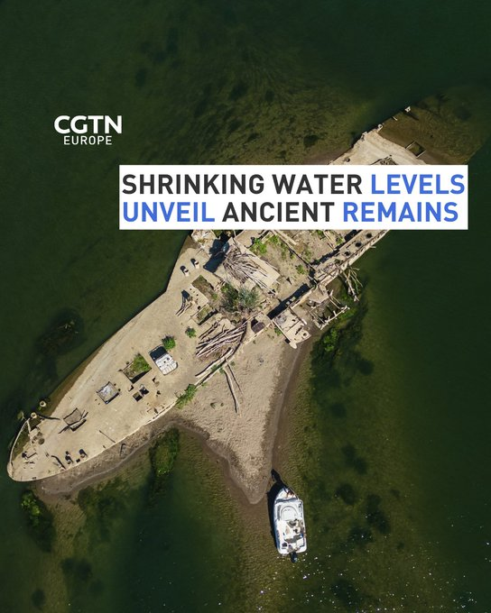
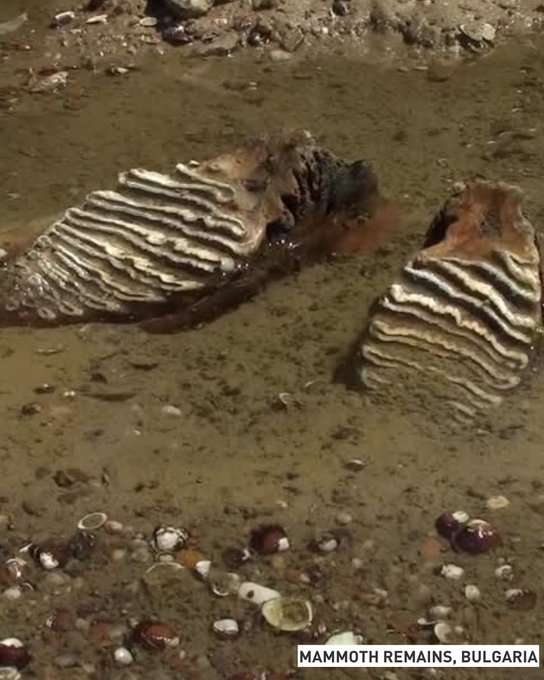

@KellieMeyerNews
📝 原文: Marine sentry posted outside the West Wing on this Monday evening 6pm Et.
🇨🇳 译文: 美国东部时间周一晚上 6 点，海军陆战队哨兵在西翼外驻扎。

🕒 2026-08-17T22:09:56+00:00
| 来源 | 旧窗口内数量 | 本次新增 | 本次淘汰 | 当前窗口内共有 |
|---|---|---|---|---|
| 推文 + Dawn 新闻 | 0 | 38 | 1 | 37 |
| ARY News | 0 | 0 | 0 | 0 |
注：淘汰数 = 旧窗口内数量 + 本次新增 - 当前窗口内共有





暂无文章。